VISION
研究によって老化の仕組みへ近づき、その知見を生活の中で使える形へ変える。健康寿命を延ばす研究と、今ある健康を守る実装の両方から、最期まで健やかに過ごせる社会を目指します。
01 / Who I am
生命科学を学び、テクノロジーをつくり、事業として届ける。健康寿命を支える社会を目指して、領域の境界を越えて動く学生です。


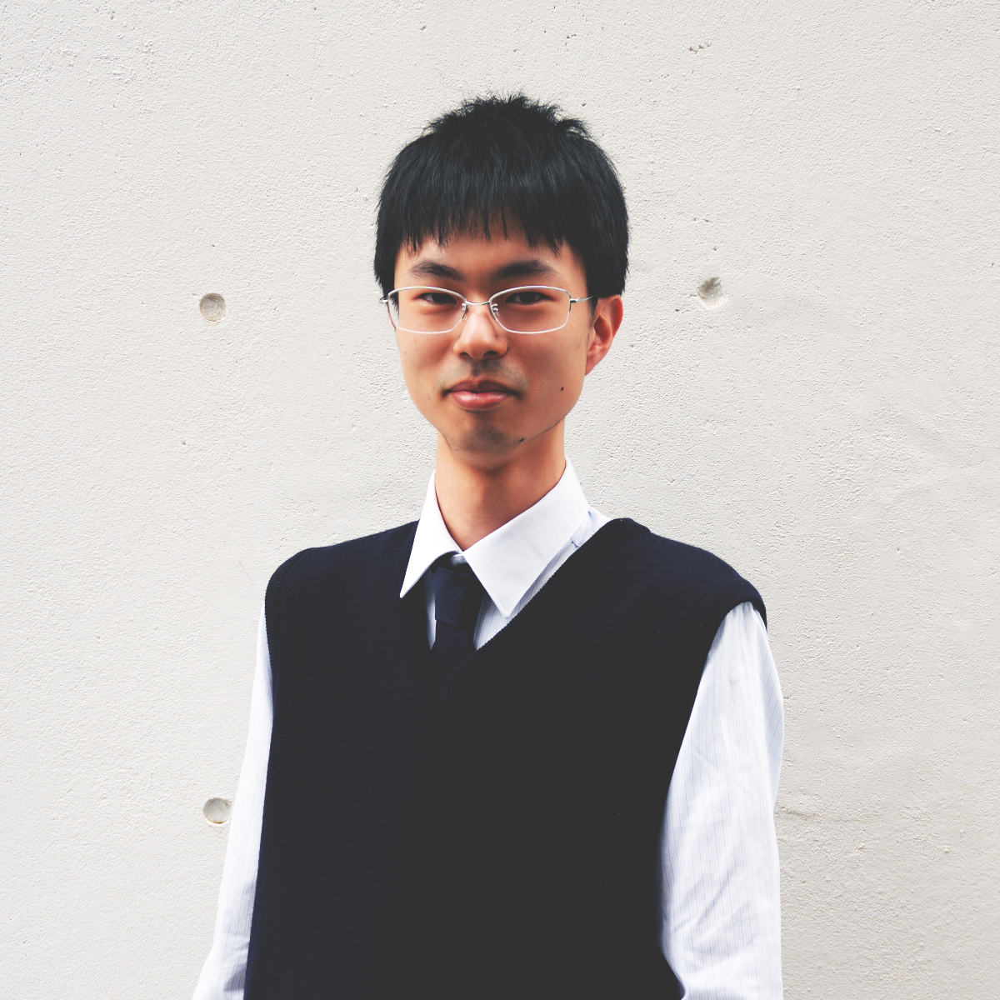
02 / Where I am going
健康であることは、自分の人生を自分で選び続けるための土台です。病気になってから治すだけではなく、老化そのものを理解し、誰もが長く自分らしく生きられる時間を増やしたいと考えています。
研究によって老化の仕組みへ近づき、その知見を生活の中で使える形へ変える。健康寿命を延ばす研究と、今ある健康を守る実装の両方から、最期まで健やかに過ごせる社会を目指します。
出発点は、幼い頃から抱いてきた「人はなぜ老い、死ぬのか」という問いでした。生命科学を学ぶ中で、iPS細胞や細胞リプログラミング、老化研究へと関心が広がっています。
老化研究の成果が社会へ届くまでには長い時間がかかります。未来を待つ間にも、今を生きる人の選択を少し良くしたい。だから研究と並行して、ITと事業による実装にも取り組んでいます。
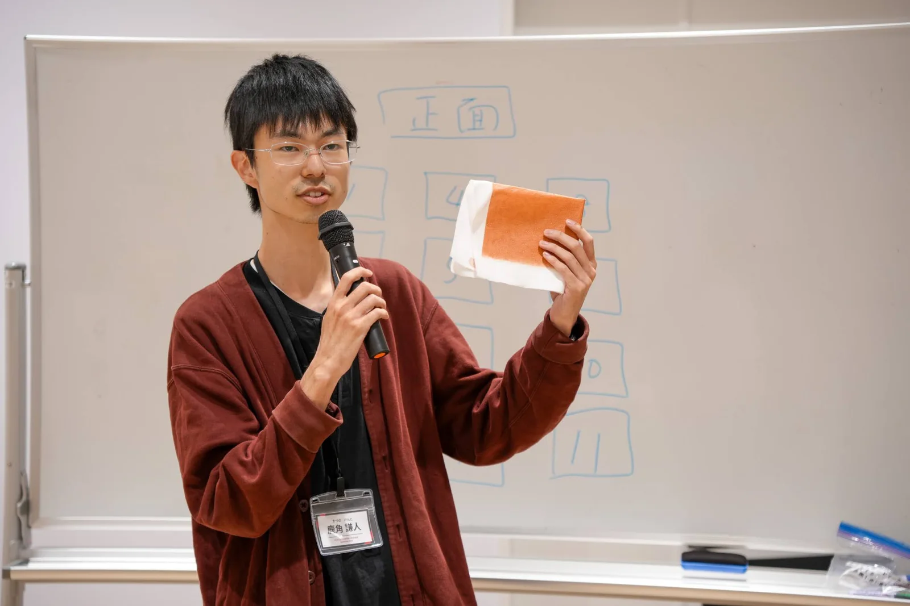
03 / How I move
目指す未来から逆算すると、研究だけでも、ITだけでも、事業だけでも足りない。異なる専門性をつなぎ、社会へ届く形までつくることを、自分の役割にしています。
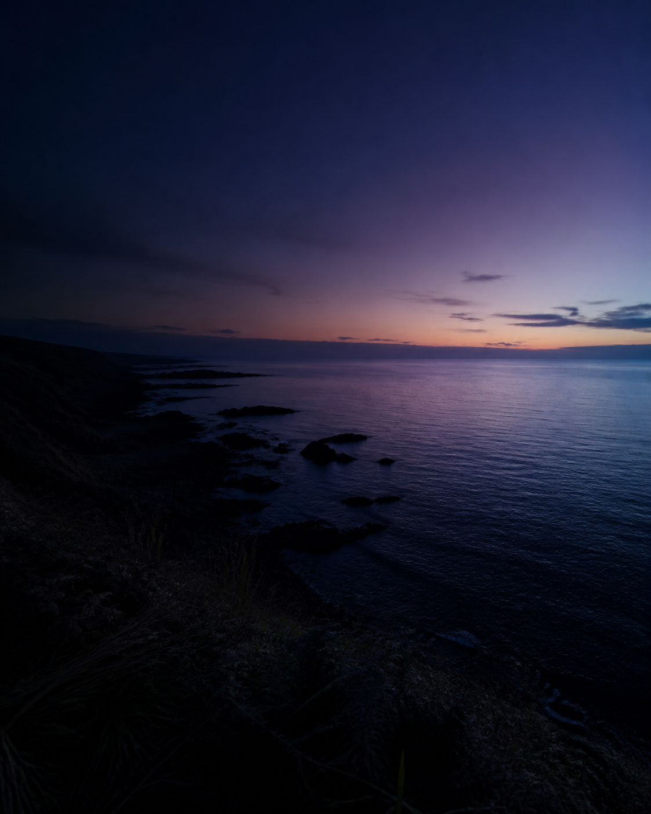
目指す社会の姿を先に置き、社会実装、事業、テクノロジー、研究へと必要な手段をたどります。
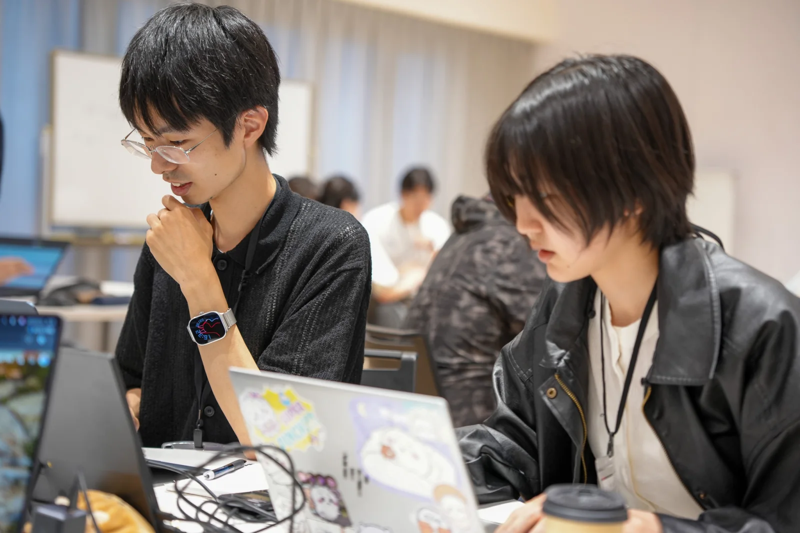
生命科学を学び、ITで形にし、事業として届ける。現在の延長線を、同じVisionへ合流させます。
04 / What I am building
手を動かして得た知見を、次の問いと実装へ。過去の素材開発から、現在のヘルスケア事業へつながっています。
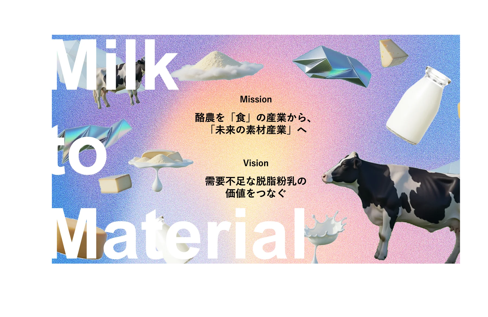
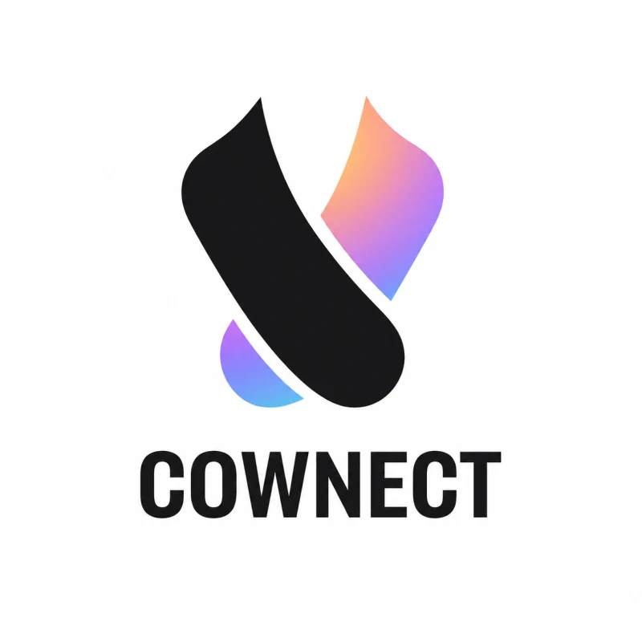
素材開発責任者
酪農経営の正常化を目指し、行き場のない脱脂粉乳からレザー風素材をつくる。
VIEW PROJECT ↗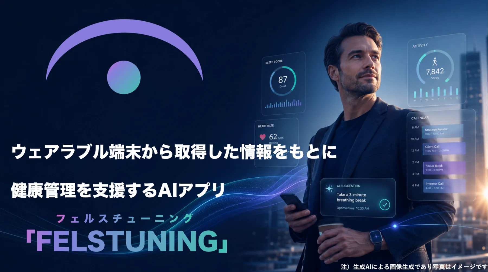
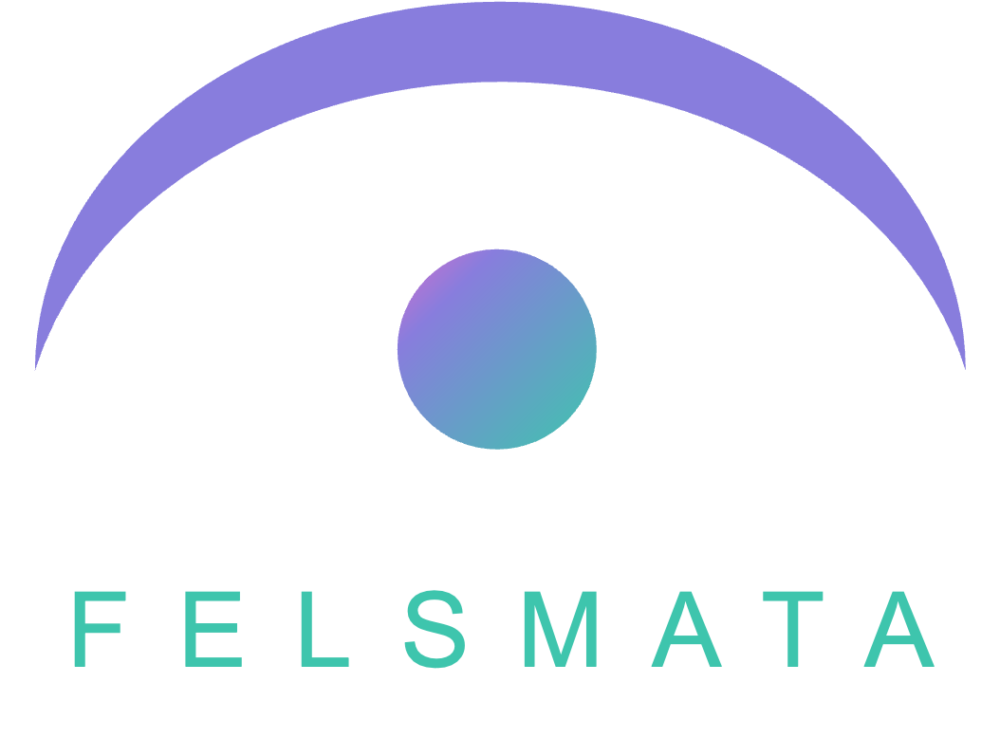
代表 / Product Builder
研究成果や身体データを、今日から選べる小さな行動へ。健康寿命を延ばす仕組みを、生活者のそばからつくる。
VIEW PROJECT ↗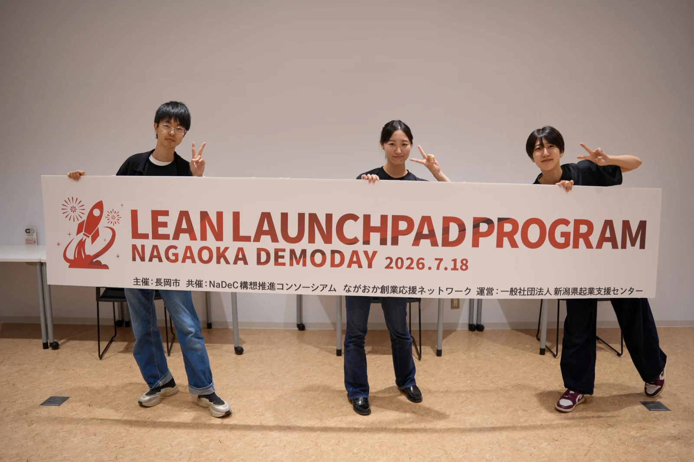
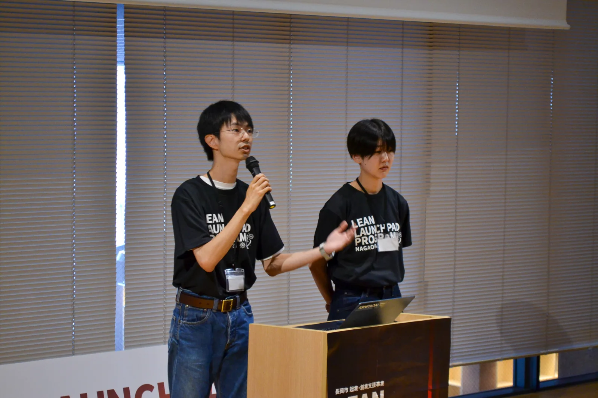
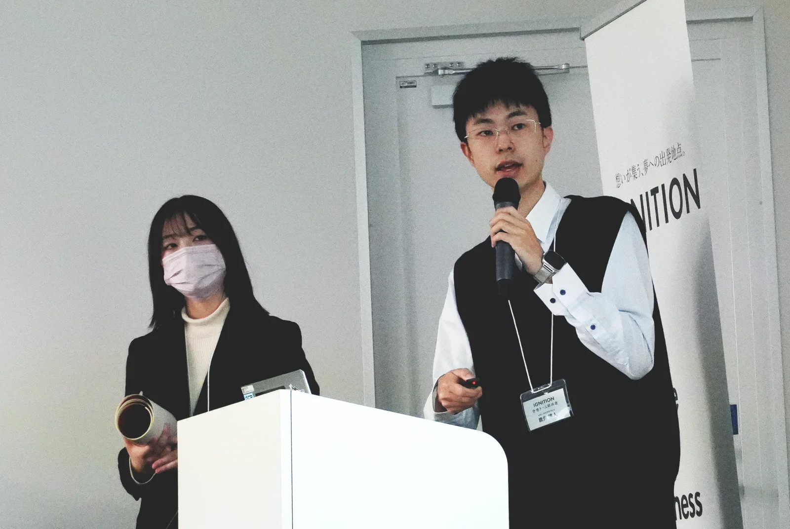
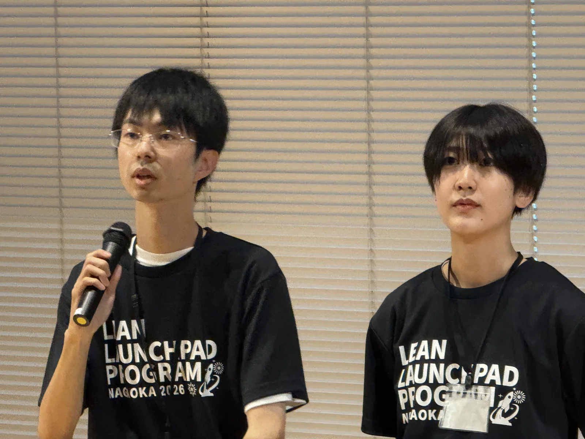
05 / Editorial
函館高専で過ごした5年間を振り返り、新しい環境へ進む決意を寄稿しました。高専で得た専門知識と経験を、自分の力で前へ進むための武器として生かしていきます。
SOURCE / PDF ↗行き場のない脱脂粉乳から独自の革風素材「コネクトレザー」をつくり、酪農・乳業界の収益改善と持続可能な仕組みづくりを目指す事業として紹介されています。
SOURCE / OFFICIAL PAGE ↗COWNECTが生まれた背景、脱脂粉乳を素材へ変える開発、酪農家の課題解決へ向けたチームの取り組みが取材記事としてまとめられています。
SOURCE / ARTICLE ↗酪農業界の不安定な経営状況に対し、革風素材の開発によって課題解決を図る提案が評価され、函館高専のCOWNECTが優秀賞を受賞しました。
SOURCE / HAKODATE KOSEN ↗06 / What I can do
人に教えること、デジタルで形にすること、情報をわかりやすく届けること。学びと実践の中で磨いてきた三つの領域です。
TOEIC 905 / 英語学習伴走200–300点台から550点へ。学習支援、教材制作、プレゼンテーション。
Prototype / AI / Product仮説を画面に落とし、触れるプロトタイプまでつくる。ユーザー検証と改善を回す。
Visual / Story / Presentation複雑な構想を、伝わる構成とビジュアルへ。LP、資料、プロダクト体験を設計する。
07 / Where I've been
函館で科学を学び、素材開発を通して社会実装に触れ、長岡で生命科学と事業をつないでいる。今の活動につながる転機を、写真とともに振り返ります。
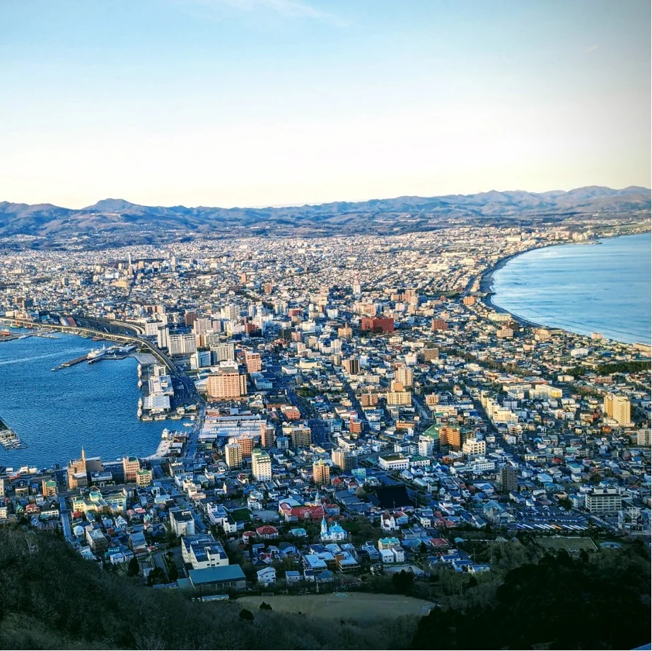
北海道函館市で生まれ、海とものづくりの近くで育つ。
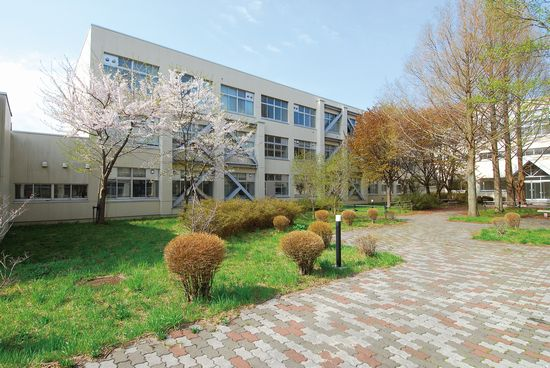
物質環境工学科で化学、生物、材料を学び、研究とものづくりの基礎を培う。
脱脂粉乳から革風素材を開発し、研究を社会へ届ける難しさと面白さを知る。
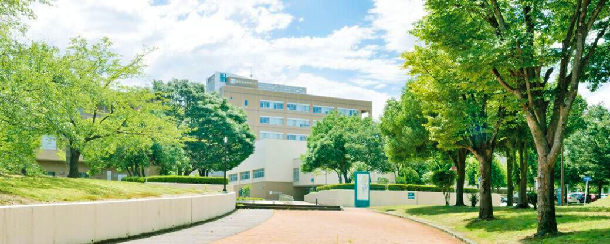
物質生物工学分野3年、技術革新フロンティアコースに所属。老化、iPS細胞、健康寿命への関心を深める。
研究、テクノロジー、事業を横断し、健康寿命を支える未来を現在の生活へ実装する活動を始める。
活動写真は本人提供。学校施設写真は公開利用条件を確認のうえ掲載しています。
08 / Let's work together
研究、技術、事業の境界にある、まだ名前のない可能性を一緒に考えたい。事業連携、お仕事、取材・登壇など、まずはメールでご連絡ください。
CONTACT BY EMAIL↗